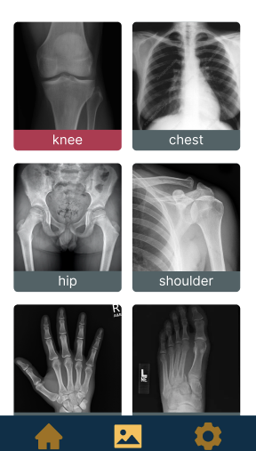
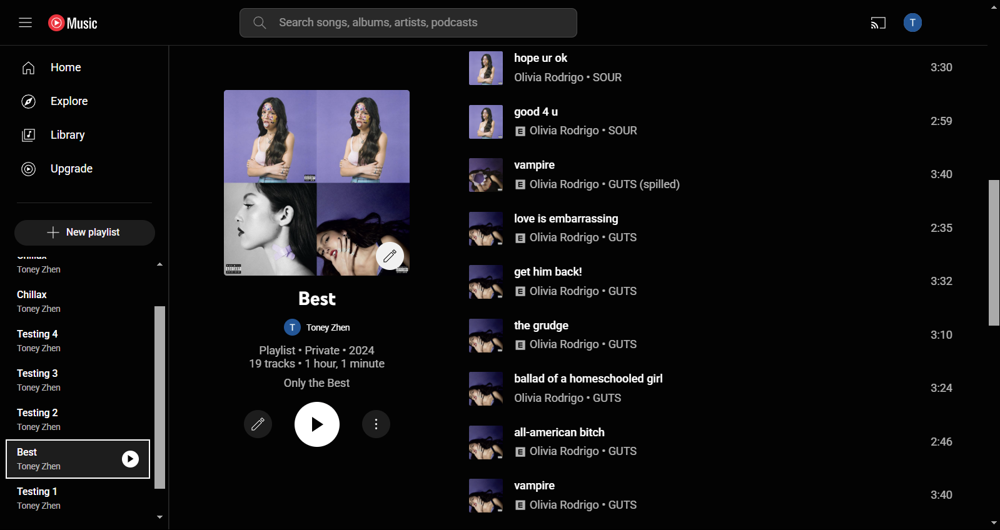

Hello there! My name is Toney Zhen and I am proud to have graduated from the University
of California, Irvine with a Bachelor of Science in Computer Science.
Persistence, open-mindedness, and a love for exploration are three
qualities in my life that have brought me to where I am today. From the
advent of the Nintendo DS to the emergence of AI language models such as
ChatGPT and Claude AI, I find myself fiddling with and indulging in the
next big thing. In addition, these qualities help me find satisfaction and
fulfillment in my everyday hobbies and interests such as programming, fitness, and chess
as I strive to be more proficient in these aspects of my life.

CS 122B
Project in Databases and Web Applications
Introduces students to advanced database technologies and web applications. Topics include database connectivity (ODBC/JDBC), database administration, web servers, web programming languages (Java servlets, XML, Ajax, and mobile platforms).
CS 122A
Introduction to Data Management
Introduction to the design of databases and the use of database management systems (DBMS) for applications. Topics include entity-relationship modeling for design, relational data model, relational algebra, relational design theory, and Structured Query Language (SQL) programming.
IN4MATX 43
Introduction to Software Engineering
Concepts, methods, and current practice of software engineering. Large-scale software production, software life cycle models, principles and techniques for each stage of development.
IN4MATX 115
Software Testing, Analysis, and Quality Assurance
Preparation for developing high-quality software through successful verification and validation techniques. Fundamental principles of software testing, implementing software testing practices, ensuring the thoroughness of testing to gain confidence in the correctness of the software.
IN4MATX 133
User Interaction Software
Introduction to human-computer interaction programming. Emphasis on current tools, standards, methodologies for implementing effective interaction designs. Widget toolkits, Web interface programming, geo-spatial and map interfaces, mobile phone interfaces.
CS 161
Design and Analysis of Algorithms
Techniques for efficient algorithm design, including divide-and-conquer and dynamic programming, and time/space analysis. Fast algorithms for problems applicable to networks, computer games, and scientific computing, such as sorting, shortest paths, minimum spanning trees, network flow, and pattern matching.
ICS 46
Data Structure Implementation and Analysis
Focuses on implementation and mathematical analysis of fundamental data structures and algorithms. Covers storage allocation and memory management techniques.
CS 143A
Principles of Operating Systems
Principles and concepts of process and resource management, especially as seen in operating systems. Processes, memory management, protection, scheduling, file systems, and I/O systems are covered. Concepts illustrated in the context of several well-known systems.
ICS 53
Principles in System Design
Introduces basic principles of system software: operating systems, compilers, and networking. Exposure to the following topics through theoretical and practical programming experiences: linking and loading, process and memory management, concurrency and synchronization, network communication, programming for performance, etc.
CS 171
Introduction to Artificial Intelligence
Different means of representing knowledge and uses of representations in heuristic problem solving. Representations considered include predicate logic, semantic nets, procedural representations, natural language grammars, and search trees.
CS 178
Machine Learning and Data-Mining
Introduction to principles of machine learning and data-mining applied to real-world datasets. Typical applications include spam filtering, object recognition, and credit scoring.
ICS 6D
Discrete Mathematics for Computer Science
Covers essential tools from discrete mathematics used in computer science with an emphasis on the process of abstracting computational problems and analyzing them mathematically. Topics include mathematical induction, combinatorics, and recurrence relations.

Collaborated with a team of developers to deliver a crucial web application for UCI medical doctors, facilitating quick and
convenient access to critical information across 25+ anesthesia procedures, enhancing clinical decision-making.

A scalable full-stack web application providing support for an e-commerce catalogue of 20,000+ movies and 70,000+ stars.

Systematically engineered a web crawler to index from 50,000+ UCI-related pages and developed a search engine based on a Boolean retrieval model, achieving an average query response time of 100 ms.

Developed a tool to convert Spotify playlists into YouTube Music playlists, enabling access to songs unavailable on Spotify.